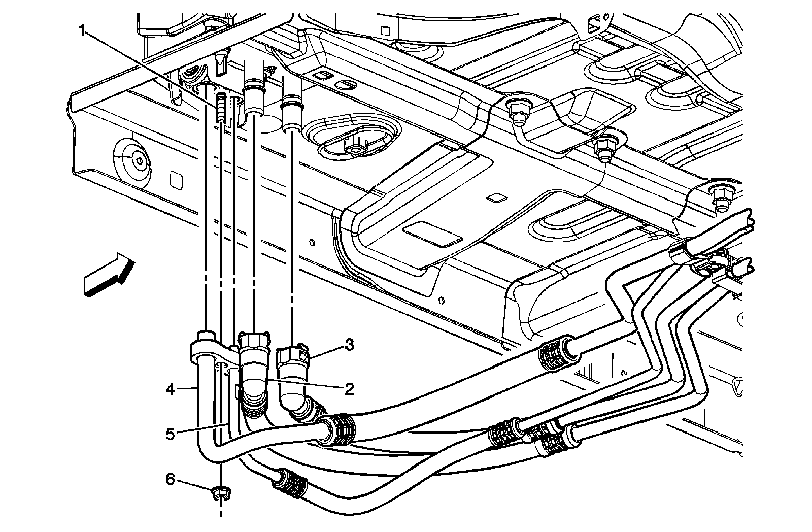
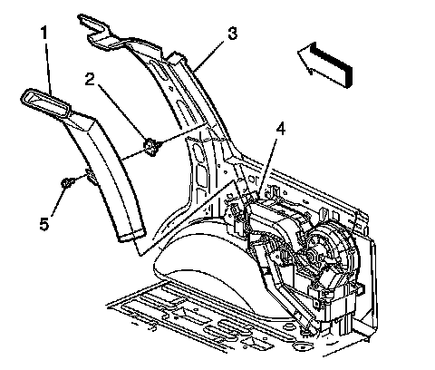
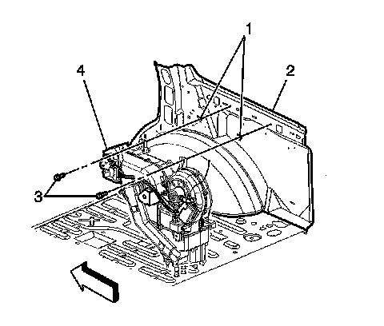

Auxiliary HVAC Module Replacement (Tahoe/Yukon/Escalade)
AUXILIARY HVAC MODULE REPLACEMENT (TAHOE/YUKON/ESCALADE)
TOOLS REQUIRED
J 39400-A Halogen Leak Detector
REMOVAL PROCEDURE
1. Recover the refrigerant from the A/C system. Refer to Refrigerant Recovery and Recharging. Refrigerant Recovery and Recharging
2. Drain the engine coolant. Refer to Draining and Filling Cooling System (Vac-N-Fill).
3. Raise the vehicle. Refer to Vehicle Lifting.

4. Disconnect the heater lines (2, 3) from the auxiliary HVAC module at the underside of the vehicle.
5. Disconnect the air conditioning lines (4, 5) from the auxiliary HVAC module at the underside of the vehicle.
6. Remove the nuts (6) from the studs (1) that secure the auxiliary HVAC module to the underside of the vehicle.
7. Lower the vehicle.
8. Remove the right rear quarter trim panel.
9. Disconnect the electrical connectors from the Auxiliary HVAC module.

10. Remove the fastener (5) for the upper auxiliary air duct (1). Carefully slide the duct up, into the headliner, until the bottom edge of the duct is above the air distributor duct.

11. Remove the fasteners (3) retaining the auxiliary HVAC module to the vehicle.
12. Remove the auxiliary HVAC module (4) from the vehicle.
INSTALLATION PROCEDURE
1. Install the auxiliary HVAC module assembly (4) to the vehicle.
2. Install the 2 bolts (3) inside the vehicle in order to retain the auxiliary HVAC module to the vehicle.
3. Install the upper auxiliary air duct (1) to the air distributor duct. Install the fastener (5).
4. Connect the electrical connectors to the auxiliary HVAC module.
5. Install the right rear quarter trim panel.
6. Raise the vehicle.
7. NOTE: Refer to Fastener Notice.
Install the nuts (6) that secure the auxiliary HVAC module to the vehicle.
Tighten the nuts to 9 N.m (80 lb in).
8. Install the air conditioning lines (4, 5) and the nut (4) to the auxiliary HVAC module.
Tighten the nut to 16 N.m (12 lb ft).
9. Install the heater lines (2, 3) to the auxiliary HVAC module at the underside of vehicle.
10. Lower the vehicle.
11. Fill the engine coolant. Refer to Draining and Filling Cooling System (Vac-N-Fill).
12. Recharge the refrigerant to the system. Refer to Refrigerant Recovery and Recharging. Refrigerant Recovery and Recharging
13. Leak test the fittings of the component using the J 39400-A.